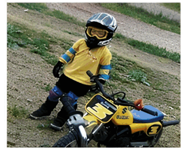
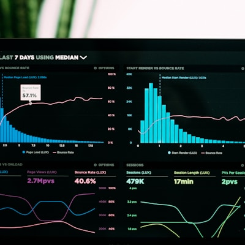
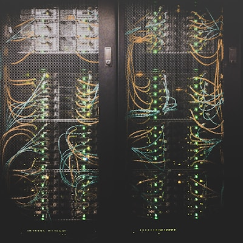

Selected Work

Ebenezer Tarubinga, Jenifer Kalafatovich, Seong-Whan Lee
IJCNN 2025
Confidence-weighted pseudo-labels, dynamic thresholding, and a boundary-aware module for semi-supervised segmentation. 65.9% mIoU on Cityscapes with only 100 labeled images.
Ebenezer Tarubinga, Jenifer Kalafatovich, Seong-Whan Lee
Neural Networks 2026
Fuzzy pseudo-labeling, entropy-based weighting, adaptive class rebalancing, and prototype-based contrastive regularization. New baselines on Pascal VOC and Cityscapes across multiple label partitions.

React · TypeScript · Express · Prisma · SQLite
Full-stack platform with AI-powered disease identification, severity scoring, 6 structured learning modules (13 lessons), community data contributions, and downloadable agricultural datasets.

React · TypeScript · Three.js · FastAPI
Production edge AI system for real-time traffic monitoring with Three.js 3D visualization, predictive analytics, and smart city integration.
Research
Adversarial ML · Multimodal Learning
Studied stealthy backdoor triggers in CLIP-style models via dual-embedding alignment in the joint visual-textual representation space.

Adversarial ML · Multi-Label Classification
Targeted perturbations for multi-label classifiers that exploit semantic label co-occurrence dependencies.
Semi-Supervised Learning · Semantic Segmentation
Systematic evaluation of weak-to-strong consistency and self-training that served as the foundation for CW-BASS and FARCLUSS.
3D Vision · Autonomous Driving
Depth estimation and point cloud generation for autonomous driving with an improved depth-to-pointcloud pipeline.
NLP · Transformers
Investigated the gap between declared and effective context length in LLMs, analyzing positional-encoding biases and the STRING shifting method.
Software
React · TypeScript · Express · Prisma · SQLite
20+ subjects, 70+ lessons, progress tracking with study streaks, learning analytics dashboard, and personalized settings. Full authentication, Zod validation, and responsive UI.